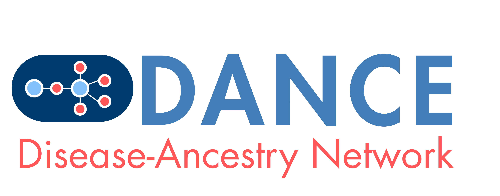
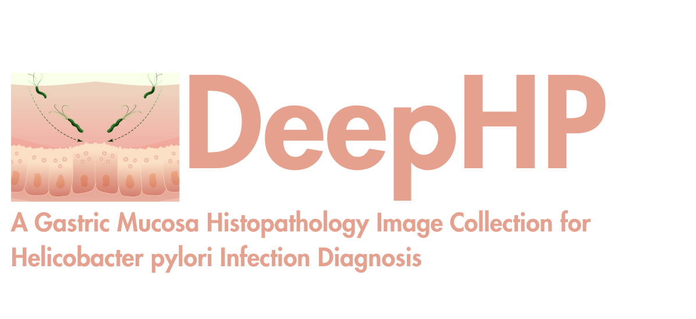

Softwares and Biological Databases
Our software are supported by research funding from CAPES, CNPq and FAPESPA.

HumanPopGen API
Fast and scalable extraction of genetic variant frequencies and regulatory effects across diverse continental and subcontinental populations.
Explore!Orí-Gen
Increasing Afro-descendants’ participation in genetic research is not only a scientific issue but also an ethical and social one. Inclusive genomics initiatives are essential to reducing historical health inequalities and building more equitable medicine.
SOON!Neurodegenerative Regulon Database
The Neurodegenerative Regulon Database (NDDB) is an interactive web application designed to analyze and compare transcription factor (TF)-centered reconstructed networks across different brain regions. The platform integrates differential expression and network analyses performed both by tissue and globally, enabling the investigation of tissue-specific TF regulons acting as master regulators (MR-TFs) in Alzheimer’s disease.
Explore!
EBV–HSA microRNA Regulatory Database
EBV–HSA microRNA Regulatory Database is a reconstructed regulatory network resource centered on Epstein–Barr virus (EBV)–host interactions.
Explore!
mtDNA-network
Explore the relationship between mitochondrial DNA variants and complex diseases through our interactive tools and graph-based databases to better understand the connections between genes and mitochondrial DNA variants behind complex diseases.
Explore!
mtDNA variant calling pipeline
An mtDNA variant calling pipeline is a bioinformatics workflow used to detect mutations in mitochondrial DNA from sequencing data. It typically involves quality control, alignment to a mitochondrial reference genome, and variant detection to identify SNVs, indels, and heteroplasmy for research or clinical analysis.
Explore!
DANCE
Disease-Ancestry Networks. GWAS-hits, human complex phenotypes and population genetic variability in a Network-based approach.
Explore!
DeepHP
DeepHP, a meticulously curated public collection of histopathological images. The DeepHP database encompasses a vast collection of 394,926 histopathological images, out of which 111k were annotated as Helicobacter pylori positive and 283k as Helicobacter pylori-negative.
Explore!